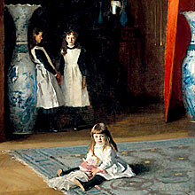

past performanceThe Studio / Three Sister in Two Acts abridged in two acts directed by Shana Cooper |
The Studio / New York's Two-Year Conservatory presents an abridged adaptation of Anton Chekhov's celebrated Three Sisters, a haunting drama churning with the impossible longings and noble impulses of a family bound to a provincial town, yet always dreaming of the beautiful and liberating possibilities of Moscow. For more information about |
showtimes:March 5 @ 8PM tickets:Ticket sales is closed. |
upcoming performances |
|||
 |
|||
| EVQ Film Festival 2018 August 20-25 |
|||
performance archives |
|||
| 2018 | 2017 | 2016 | 2015 |
| 2014 | 2013 | 2012 | 2011 |
| 2010 | 2009 | 2008 | 2007 |